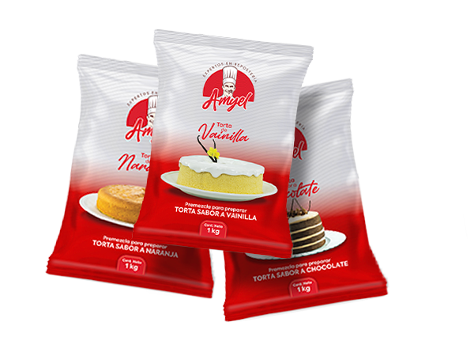

Industrias Alimentarias
RELLENOS CULINARIOS
Hablar de una torta sin un relleno no tiene sentido, el relleno es como el alma de las tortas, es quién le da la razón de ser. Son los rellenos quienes definen la personalidad de las tortas y por eso mismo es que son tan importantes. Preparamos todo tipo de rellenos a base de fruta natural.
NUESTRA GAMA DE PRODUCTOS

CONTACTANOS
Nuestros Rellenos
Preparados a partir de puré y trozos de frutas, con una buena consistencia y textura. Los rellenos se utilizan para diversidad culinaria como galletas, tortas, yogurts, postres helados, etc. Elaboramos rellenos de cualquier fruta que el cliente solicite.